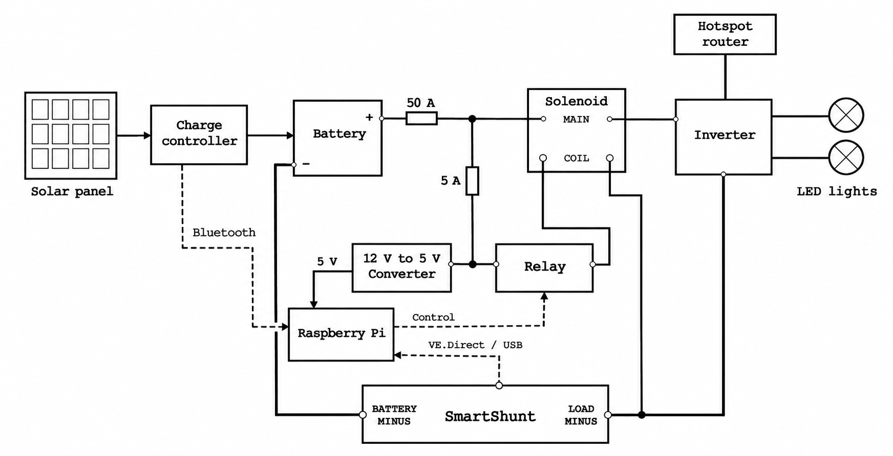

What each system needs to do
- Read and store data from the charge controller and SmartShunt.
- Automatically switch the discharge circuit on at sunset and off at sunrise.
- Upload the logs to the cloud for remote access.
Supervisor: Dr. Truong Le
Timeline: June 2026–present
How much energy do we actually gain by making a solar panel follow the Sun? This project compares a fixed 275 W panel with an otherwise similar 275 W panel on a single-axis tracker.
Because this is a long-term experiment, and the comparison depends on data collected over an extended period, both setups need to run autonomously. We also want the data to be readily available online, so monitoring the experiment does not rely on proximity.
Below is a schematic of the fixed-panel circuit. Both circuits were designed, assembled and programmed entirely by me.

The important part is done - the circuit is set up and collecting data. The slightly less glamorous next step is organizing the components to slightly reduce the spaghetti aesthetic.